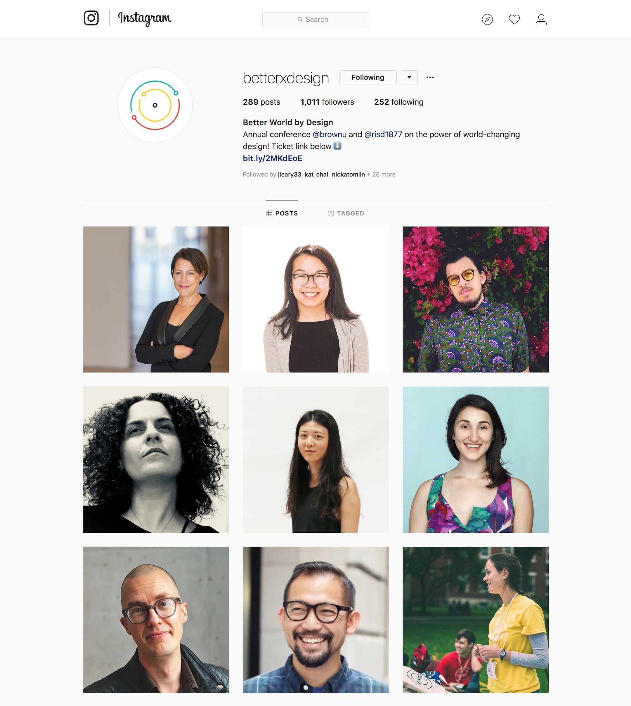

Better World x Design
Organizing RISD & Brown's Annnual Interdisciplinary Design Conference
2016 - 2018
For two committee cycles, I've worked on the organizing committee behind Better World by Design to plan the largest student-run sustainable design conference in nation.
Each year, 1000+ attendess and 70+ presenters fly in from around the world. In my first year, I worked on Community Engagement then transitioned to PR the following year. As a CE coordinator, I helped facilitate workshops and discussions that engage in design thinking and arts education for our 10th aniversary conference.
BWxD Conference 2017
Our theme for the 10th aniversary conference was Blocks, Bytes, and Bars. We brainstormed and workshoped a wealth of ideas for over a month to arrive at these three symbols, which provide an alternative method of conceiving the design process. They can also represent design’s traditional past, technological present, and aspirational future. Symbolism, however, is inherently ambiguous and invites multiple interpretations. As such, we hoped that crafting the theme in this way will provide a fresh lens through which new stories, understandings and connections can emerge.
Community Engagement
While Better World's mission is to celebrate interdisciplinary collaboration and design thinking, our goal as a Community Engagement subcommittee was to explore and initiate projects where Better World's mission could exist outside of the conference and in our local communinity. Our tasks included volunteer recruitment, running volunteer training and orientation sessions, organizing the Design Expo and hosting community based workshops to put into practice design thinking ideologies. We worked with CityArts, the Children's Museum, Providence High Schools, and were in communications with local organizations, artists, startups and other instituions for opportunities to collaborate. Here are some of our projects and successes.
We selected a total of 80 volunteers out of 100+ applicants and ran three 2-hour orientation sessions the week leading up to the conference. Here are some of our volunteers working their shifts at the conference.
The Design Expo took place on the second day of the conference, where for the first time the entirety of Brown University’s Main Green was open for innovators to show off their projects. We recurited 30 student orgainizations, companies and other institutions to showcase their work at the Expo. Participants included Coding it Forward, SoaPen Inc, and CMU Integrated Innovation Institue.The Expo is one event in particular that aimed to broaden the horizons of our participants by showing them the different forms that design can take.

Miscellaneous Projects
We also initiated a series of new community engagement projects in collaboration with local organizations. This includes conference themed workshops at the Providence Children's Museum, the launch of our first High School Attendee Program, and a small marketplace and screenprinting activity preceding the KnowHER design talk we co-hosted with AIGA RI featuring Naz Arandi, Creative Director of Netflix.
To further explore the ways design can manifest in our community, we set up multiple meetings with CityArts, a locally based organization providing after school arts- and project-based learning, to create a design challenge for college students in New England. Other ideas we that were not fully realized due to our timeline included an end-of-year garage sale to promote sustainable practice, collaborative art installations with local artists, and a "paint the steps" public art project on RISD's campus.
BWxD Conference 2018
As a PR coordinator this year, I work to develop media campaigns, write press releases, and facilitate communications other instutions, professional and student organizations. This year, we cross-promoted with Harvard Graduate School of Design’s annual design conference, themed this year as InfluencexDesign, and AIGA RI on their KnowHER Design Talks to celebrate inspiring female design professionals, as well as improve and expand on our current PR practices. Here are some selected projects done throughout the 2018 committee cycle.
BWxD and AIGA Captions Copy
For the second year, BWxD has collaborated with AIGA Rhode Island to co-host one of their KnowHER Design Talks. This series celebrates and highlights inspiring female designers who make up our industry today. Every Thursday in March, one female designer will give a presentation on her work and her experiences. These captions paired with short videos and graphics were launched on our social media channels to promote the event and generate awareness for the KnowHER series among RISD and Brown students, as well as the greater Providence community.
March is here! Join Better World x Design as we collaborate with AIGA Rhode Island to kick-off our 3rd Annual KnowHER Design Talks highlighting leading women in design. Go to www.knowherdesigntalks.com for tickets and learn about this year's speakers! #KHTD2018 #knowHER #BWxD18
Don't miss AIGA Rhode Island's KnowHER Design Talks featuring influential and inspiring female designers! Check out each speaker in our events or to purchase tickets now + see full speaker lineup @ www.knowherdesigntalks.com
Join Better World x Design later this month for AIGA’s 3rd Annual KnowHER Design Talks highlighting women leaders in design! Visit www.knowherdesigntalks.com for more info + tickets! #KHTD2018 #knowHER
Can’t wait for Better World’s conference in September? You’re in luck! Join us for AIGA Rhode Island’s KnowHER Design Talks coming to Providence later this month! Get inspired by some of the leading female professionals in design. Go to www.knowherdesigntalks.com for tickets + learn about this year's speakers!
Need your fix of design before Better World’s annual conference in September? Let AIGA Rhode Island tide you over with their KnowHER Design Talks coming to Providence throughout March! Don’t miss some of design’s biggest female names and grab your ticket now at www.www.knowherdesigntalks.com!
Social Media Campaigns
We launched three campaigns throughout the year to introduce the 2018 committee with silly photos "meet the committee", reveal our conference theme "theme launch", and release our speaker lineup with "speaker spotlights". These campaigns launched in conjunction with our BWxD website updates and all our social media channels. Print materials were also distributed around campus. During these campaign months, we have reached an average of 6,000+ organic hits, 1000+ page engaged visitors and 41,000+ total impressions from Facebook and Instagram.
Tensions Theme Launch
One of our largest social events is the Theme Launch Party to reveal the 2018 theme and get students excited for the September conference. This year, we have chosen the theme of Tensions as an opportunity to reflect upon recent social, political, environmental, and technological challenges and their implications for design practices. Tensions can be described as the state or condition resulting from opposing applied forces. This definition can be extended to refer to a strained relationship between conflicting ideas, entities, or people.
The PR team wanted to broadcast our theme in a more memorable way. We brainstormed a sequence of acronymcs to represent the word Tensions, listed below. One letter of our theme was released along with a short video each day of the week leading up to our launch party.
T - Together: into companionship or close association.E - Evolve: develop from a simple to a more complex, advanced form.
N - Network: a group or system of interconnected people or things.
S - Solutions: a means of solving a problem.
I - Innovate: to introduce as new, to effect a change in.
O - Opportunity: a condition favorable for attainment of a goal.
N - Necessary: required to be done, achieved, or present.
S - Spearhead: a leading element, force, or influence in an undertaking.
Facebook Profile Photo Frames
I initially came up with the profile photo frames idea for conference volunteers to show off their involvement and to generate more awareness and interest from their friend groups. Out of 100+ applicants, Better World accepts 50-70 volunteers every year. Volunteers receive a free pass to the conference and a special T-shirt on the day of their first shift, but have no way to expressing their participation online. Regardless of the capacity of involvement from each volunteer, participant, presnter, or committe memeber, they can now all broadcast BWxD to their friends.


Speaker Spotlights
As our confirmed speakers became finalized over the summer, I updated our social channels weekly as we continue to build our lineup. Their headshots, bio and sotires were shared on Facebook, Instagram, Twitter and some on LinkedIn. The full lineup can be found here.
